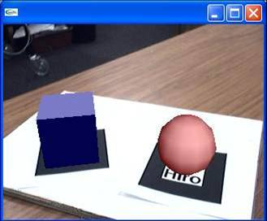

Augmented Reality (AR) experiences integrate computer generated data, such as 3D graphics, into the real world and allow real-time user interaction. A very compelling application of AR is for storytelling, education and entertainment. As content can be actively manipulated and explored by participants is a physical setting, their engagement and motivation can be enhanced and complex ideas can be communicated more easily.
The Augmented Reality Experiences Editor (ARTECT) has been developed to simplify the process of authoring AR interactive experiences. It makes use of optical markers as a means of linking virtual content to physical objects in the environment. The figure below shows an example of a visual marker and an augmented view of physical space. This approach does not require expensive technology; just a visual pattern printed on a piece of paper and a web camera, and as such is ideally suited for a tool designed for easy experimentation.
ARTECT allows you to configure AR experiences by creating simple links between components which abstract complex data and devices. Resources such as 3D models, images, audio clips and visual markers are loaded into ARTECT and given iconic representations. You can then manipulate these components and draw graphical connections between them as a way of developing an AR application, the output of which you can concurrently see in an output window. The tool also supports the specification of more complex behaviours, such as triggering actions based on the relative position of 2 markers, using physical input devices to manipulate virtual objects and controlling outputs such as X10 devices and web pages.
In this tutorial we will cover how to cerate a simple AR experience using the ARTECT editor.